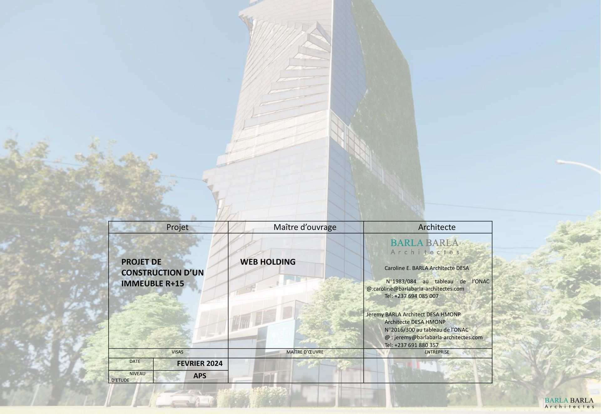
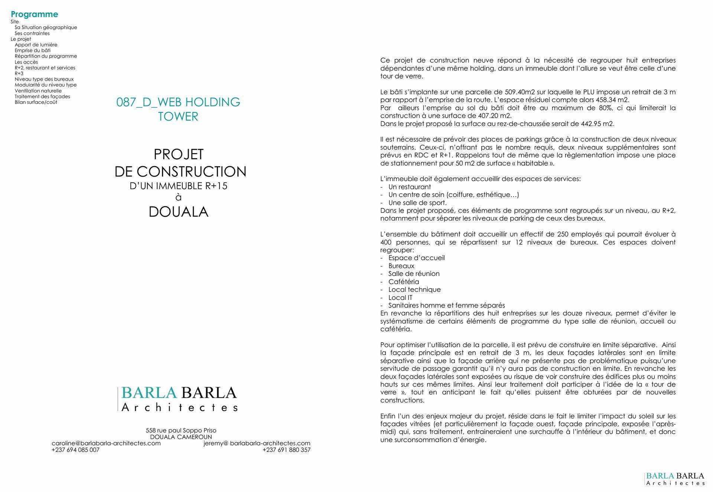
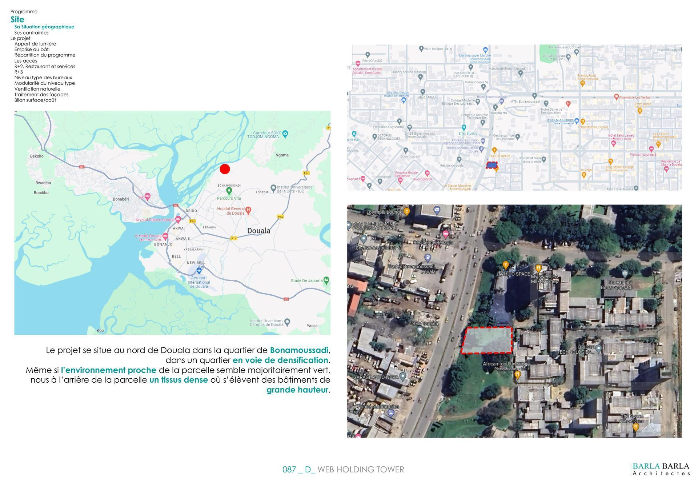
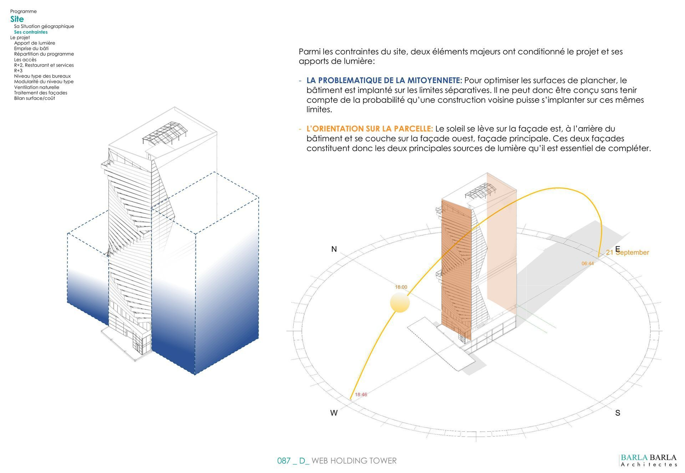

Un Phare Digital au Cœur de Douala
La D-Web Holding Tower est un projet ambitieux de siège social pour une entreprise technologique majeure. L'architecture exprime la modernité et l'innovation à travers des lignes verticales fortes et une façade dynamique.
Le bâtiment a été conçu pour offrir des espaces de travail collaboratifs de nouvelle génération, intégrant des zones de détente, des plateaux modulables et une gestion intelligente de l'énergie. La tour s'impose comme un repère architectural dans le paysage urbain de Douala.
Usage
Siège Social & Coworking
Statut
Étude de Conception
Localisation
Douala, Cameroun



